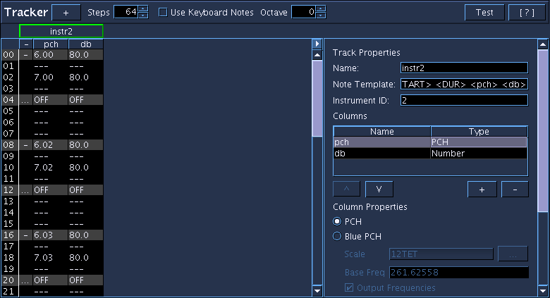

Tracker
Introduction
Accepts NoteProcessors: yes

The Tracker SoundObject is a table-based tool to enter in patterns of notes using the Tracker paradigm but in a way specific to Csound SCO work. Each Tracker is organized in vertical Tracks of n number of steps where n is configurable by the user (defaults to 64 steps). Notes are entered into each Track with Tracks being configurable as to what parameters (columns) to use. Unique to the Blue Tracker SoundObject is the support for microtonal scales using Scala scale files as well as support for Csound's Tied-Notes feature.
Introduction to the Interface
The interface consists of three main areas: the top tool bar, the main tracking area, and the track properties editor.
The top tool bar has a "+" button which adds new tracks to the Tracker, a Steps entry widget to enter in the number of steps the Tracker should have, a toggle for using Keyboard Note mode (see below for more information), an Octave entry widget to determine the relative octave for the Keyboard Note mode, a Test button to see what the generated score will be for the Tracker, as well as a help button that opens up a quick reference sheet for keyboard shortcuts.
The main tracking area is where all of the score work is done to enter and modify notes. More information about note entry and modification is available below in the section "Entering in Notes".
The last interface area is the track properties editor. The track properties editor is held in a collapsible pane and when the tracker editor initially loads it will be collapsed. To open up the track properties, at least one track needs to be added to the tracker. Once one track exists, click the small button above the right scroll bar to open and close the track editor properties. More information on using the properties editor follows below in the section "Settings Things Up".
Setting Things Up
When the Tracker Object is edited it is completely blank. To start, click the "+" button to add as many tracks as you would like to use. After adding the number of tracks you'd like to use you will need to configure the track to work with your Csound instruments. Open up the track properties editor using the "<" toggle button above the right scroll bar. Afterwards, select a track by clicking the name panel above a track. Selecting a track will populate the track properties editor as well as hilight the name panel with a green border. A track's properties consist of a Name, Note Template, Instrument ID, and Columns; descriptions of the values are listed below.
Track Properties
- Name
- The name property is used only for reference; editing the name changes the title shown on the name panel and is for the user's reference.
- Note Template
- The note template is used when generating the notes for the track. Items in the template that are within < and > tags will be replaced by values either from the Tracker (START and DUR), the Instrument ID (INSTR_ID) or values from the columns, using the column's name as a key (i.e. if a column is called "space", when generating a note for the track, any value in the space column will replace the <space> text in the note template). Note templates will generally follow the form "i <INSTR_ID> <START> <DUR>" and then have tag keys for each column for the track.
- Instrument
- Instrument name or number to be used when replacing <INSTR_ID> in Note template strings.
- Columns
-
Each track has a minimum of one configurable column (the tied-note is a feature of all tracks and is not a part of this editor) and is user-configurable to add as many columns as the user needs for the values to use in their notes for their instruments. Columns are added and removed using the Columns table and can be organized by pushing up and down in the table which will move their order left and right in the main tracking area. To edit the name of the Column, use the Columns table to edit the name of the column.
Each Column also has a type. The type information is used by the tracker when entering data to verify that the data being input is of that column's type, as well as used when using shortcuts to manipulate data in that column.
- PCH
- Csound PCH format. Entering data will verify that data is in the octave.pitch format. Using the increment and decrement value shortcuts will propertly add or subtract one to pitch value, i.e. incrementing the value of 8.11 will result in 9.00.
- Blue PCH
-
The Blue PCH format is like the Csound PCH format except that the pitch part is always a whole number integer and is the scale degree of the selected Scale. A valid value in Csound PCH such as 8.01 is not valid in Blue PCH as 01 is not an integer (the equivalent in Blue PCH would be 8.1).
Using Blue PCH allows for using Scala scale files to do microtonal tracking. To choose a Scala scale, use the "..." button to open up a file selector to choose a Scala scale. Afterwards, enter in the base frequency for the scale (the default is 261.62558 or middle-c). The "output frequencies" checkbox will determine how the values entered into this column will be interpreted. By default, "output frequencies" is enabled, meaning when the tracker goes to generate notes, it will take the Blue PCH values that are entered and convert them to a frequency value in hertz. If you deselect this option, the tracker will pass the Blue PCH value out. This option should generally be left enabled unless the user is planning to do further operation on the pch values via NoteProcessors that work with Blue PCH.
Using Blue PCH, data will be verified on entry and increment/decrement value options will work in the same way as for PCH.
- MIDI
- MIDI will limit the values entered to whole number integers from 0-127. Using the increment and decrement value shortcuts will add or subtract 1 to the value.
- String
- The String type allows the user to input any value they want. No verification is done on entry and the increment/decrement value shortcuts will have no effect.
- Number
- The Number format will limit the values entered to only numbers. Values can be further restricted to a given range as well as to only use whole number integers. Using the increment and decrement value shortcuts will add or subtract 1 to the value.
Entering in Notes
Entering in data into the tracker is much like entering data into any other table, though learning the keyboard shortcuts will vastly speed up entering and modifying data. To begin click anywhere on a track where you would like to add a note. Now, begin typing to enter in a value for that note, then press enter when you are finished. Depending on the type of column you have configured, Blue will verify that the data entered is allowable and if so it will save that data to the note. If the value is not allowable, the cell will become hilighted in red and will require you to either fix your input to be valid or press esc to cancel entering in data.
When entering in data for a new note, the first time you enter in information for a column in the note's row, it will not only enter in the data for the column, but also copy values for all other columns from the first note that exists previous to the note being edited. If there is no notes entered, some default settings will be used based on the column type.
Like other tracker systems, the duration of a note entered will last as long as until either the next entered note, the end of the pattern, or until an OFF note is encountered. So, for example, if a note is entered in step 0 and step 2, the duration of the first note will last 2 steps while the second note will last until the end of the pattern (62 steps in a default 64 step track). To enter an OFF statement, go to the row where you want the note to end and press ctrl-shift-space. This will make the row an OFF note. So, if a note is entered in step 0 and step 2 and an OFF is entered into step 1 and step 4, the first note will last 1 step while the second note will last 2 steps.
To increment and decrement values in a cell, use the arrow keys to go over the cell you want to increment or decrement and then use ctrl-up or ctrl-down respectively to change the value. (NOTE: This operation operates differently for each column type and does nothing for the String type. Please see the column type information above for more information.)
Keyboard Note Mode
Like most trackers, the Tracker object has keyboard shortcuts that will allow for very quickly adding notes. To enable Keybaord Note mode, either click the checkbox on the top tool bar or use the keyboard shortcut ctrl-k. By enabling Keyboard Note mode, the keys on the keyboard will be mapped to note values much like a piano keyboard. When the selected cell is of type PCH, Blue PCH, or MIDI, pressing those keys will enter in a value related the keyboard mapping (see Shortcuts section).
The user is also able to change the base octave of the Keyboard Note mode. To change the octave, use either the spinner control on the top tool bar or use the keyboard shortcuts ctrl-shift-up or ctrl-shift-down. By default, the base octave starts at middle-c.
Shortcuts
| Shortcuts | Description |
|---|---|
| ctrl-space | clear or duplicate previous note |
| ctrl-shift-space | set or clear OFF note |
| ctrl-up | increment value |
| ctrl-down | decrement value |
| ctrl-t | toggle note tie |
| ctrl-x | cut selected notes |
| ctrl-c | copy selected notes |
| ctrl-v | paste notes from copy buffer |
| insert | insert blank note into currently selected row, notes in current row and after are shifted down; if notes are at end are shifted off they are lost |
| del | delete selected note(s), move selection to next row after current selection |
| shift-backspace | delete selected notes, notes after selected notes are shifted up to fill in place where deleted notes were, empty notes appended to end |
| ctrl-k | toggle keyboard notes mode |
| ctrl-shift-up | raise keyboard octave by one |
| ctrl-shift-down | lower keyboard octave by one |
Keyboard Note Mode
| Shortcut | PCh Value | Blue PCH Value | MIDI Value |
|---|---|---|---|
| z | 8.00 | 8.0 | 60 |
| s | 8.01 | 8.1 | 61 |
| x | 8.02 | 8.2 | 62 |
| d | 8.03 | 8.3 | 63 |
| c | 8.04 | 8.4 | 64 |
| v | 8.05 | 8.5 | 65 |
| g | 8.06 | 8.6 | 66 |
| b | 8.07 | 8.7 | 67 |
| h | 8.08 | 8.8 | 68 |
| n | 8.09 | 8.9 | 69 |
| j | 8.10 | 8.10 | 70 |
| m | 8.11 | 8.11 | 71 |
| q | 9.00 | 9.0 | 72 |
| 2 | 9.01 | 9.1 | 73 |
| w | 9.02 | 9.2 | 74 |
| 3 | 9.03 | 9.3 | 75 |
| e | 9.04 | 9.4 | 76 |
| r | 9.05 | 9.5 | 77 |
| 5 | 9.06 | 9.6 | 78 |
| t | 9.07 | 9.7 | 79 |
| 6 | 9.08 | 9.8 | 80 |
| y | 9.09 | 9.9 | 81 |
| 7 | 9.10 | 9.10 | 82 |
| u | 9.11 | 9.11 | 83 |
| i | 10.00 | 10.0 | 84 |
| 9 | 10.01 | 10.1 | 85 |
| o | 10.02 | 10.2 | 86 |
| 0 | 10.03 | 10.3 | 87 |
| p | 10.04 | 10.4 | 88 |
For More Information
See the tracker.blue example file in the blue/examples/soundObjects folder.